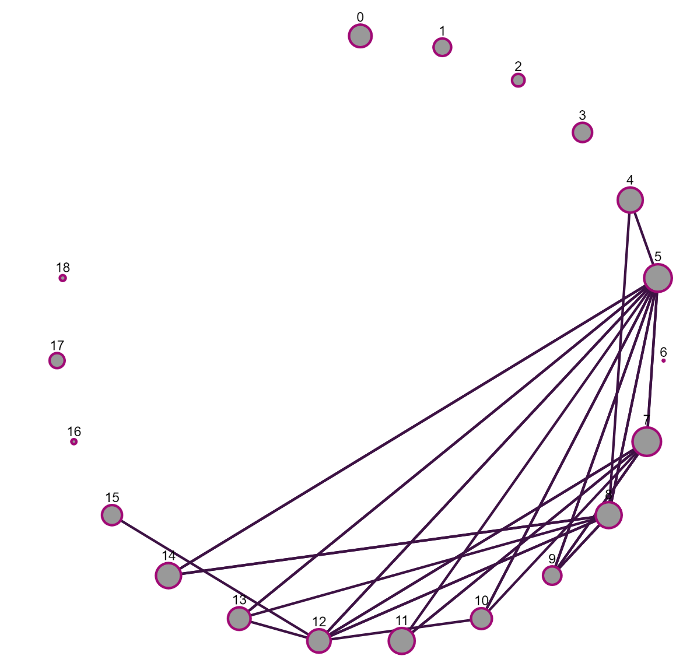
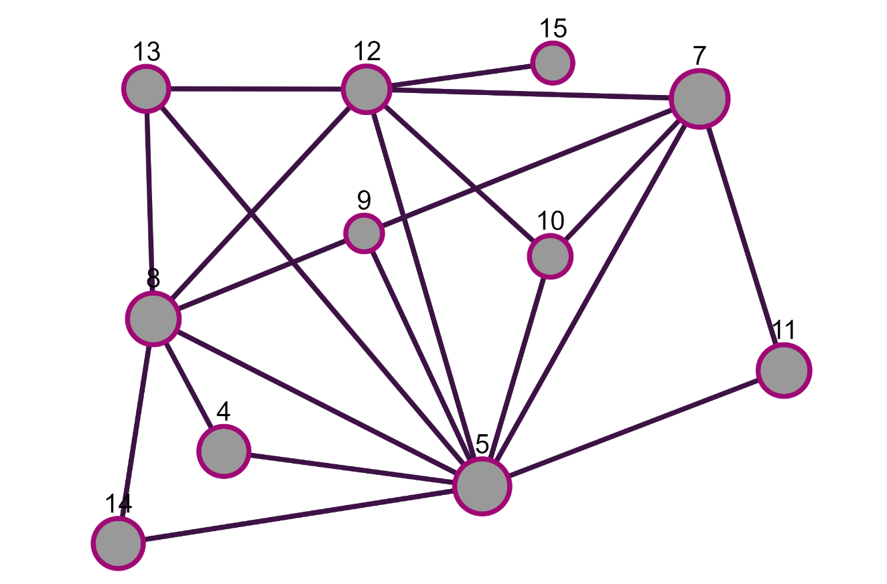
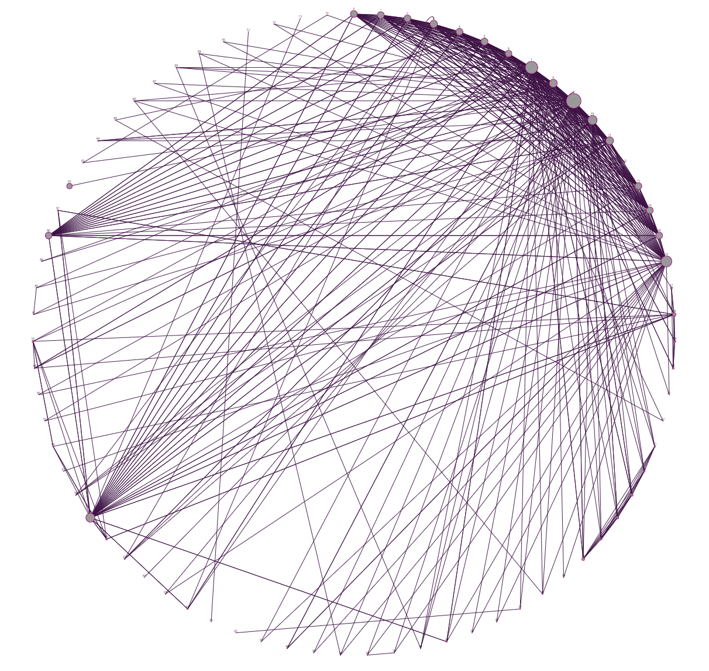
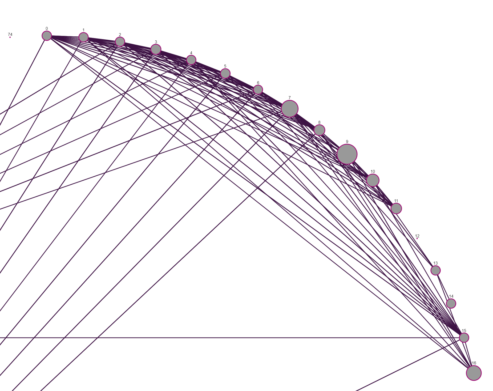
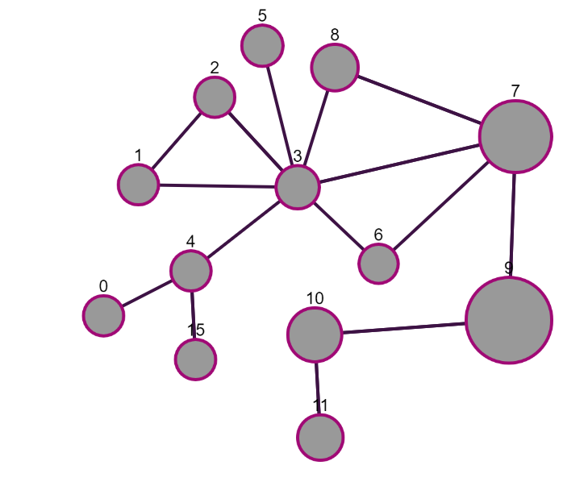

<html data-theme="light"></html>
<header>
    <metadata name="viewport" content="width=device-width, initial-scale=1"></metadata>
    <link rel="stylesheet" href="https://cdn.jsdelivr.net/npm/bulma@1.0.0/css/bulma.min.css"></link>
    <script src="https://kit.fontawesome.com/fd17b6d7c8.js" crossOrigin="anonymous"></script>
    <link rel="stylesheet" href="styles.css"></link>
    <link rel="preconnect" href="https://fonts.googleapis.com"></link>
    <link rel="preconnect" href="https://fonts.gstatic.com"></link>
    <link rel="stylesheet" href="https://fonts.googleapis.com/css2?family=Yrsa:ital,wght@0,300..700;1,300..700&display=swap"></link>
    <link rel="stylesheet" href="https://fonts.googleapis.com/css2?family=Merriweather:ital,wght@0,300;0,400;0,700;0,900;1,300;1,400;1,700;1,900&display=swap"></link>
    <script src="Script.js" type="module"></script>
</header>
<body class="has-background-light has-text-dark" onLoad="execScripts()" style=" 
                    overflow-x:hidden; width:100%; 
                    --family-serif:'Yrsa', serif; 
                    --family-secondary-serif: 'Merriweather', serif;
                    --family-primary: var(--family-serif);
                    --family-secondary: var(--family-secondary-serif);
                    font-family: var(--family-primary);
                    font-family: var(--family-secondary)
                    ">
    <section class="container is-fluid">
        <nav class="navbar is-fluid has-text-dark has-background-light" role="navigation" aria-label="main navigation">
            <div class="navbar-brand">
                <a id="navbar-burger" class="navbar-burger is-text has-text-dark" role="button" aria-label="menu" data-target="navbarBasicExample">
                    <span aria-hidden></span>
                    <span aria-hidden></span>
                    <span aria-hidden></span>
                    <span aria-hidden></span>
                </a>
            </div>
            <div id="navbarBasicExample" class="navbar-menu navbar-end">
                <a class="navbar-item" href="about.html">About</a>
            </div>
        </nav>
        <section class="container content is-medium has-text-dark" style="max-width: 800">
            <nav class="level mt-6">
                <div class="level-left">
                    <div class="level-item">
                        <span class="icon is-medium is-primary">
                            <i class="fa-regular fa-circle is-primary" style="color:#00d1b2"></i>
                        </span>
                        <p class="ml-2 has-text-dark">Note</p>
                    </div>
                </div>
            </nav>
            <div class="title is-size-1 mb-5 has-text-dark">Understanding the structure of collaboration networks</div>
            <div class="subtitle is-size-3 is-family-secondary mb-6 has-text-dark" style="font-weight: 350">Quick proof of concept revealing informal collaboration network in organisations by analysing Slack and Google Meets data.</div>
            <div class="columns mb-6">
                <div class="column is-two-thirds pr-2 has-text-dark">
                    <span class="tag is-medium">Remote Working</span>
                    <span class="tag is-medium">Management</span>
                    <span class="tag is-medium">Data Science</span>
                </div>
                <div class="column is-one-third is-size-7 has-text-right has-text-dark" style="font-weight:350">
                    <p>CREATED ABOUT 1 YEARS AGO</p>
                </div>
            </div>
            <div>
<p>Companies have an official org chart but most of the collaboration is done through informal cooperation.
This collaboration network is often hidden from senior management and as a result, many company-wide initiatives such as digital transformation, mergers, and reorgs fail.</p>
<p>Knowing how information flows and collaboration really happens is essential, especially at a time when more and more companies are worried about the creative impact of remote work.</p>
<p>A field called Organisational Network Analysis (ONA) tries to solve this problem by visualising collaboration as a network of nodes and edges.
This approach can reveal staff member nodes that are overloaded, disengaged, information brokers, bottlenecks, or are acting as bridges between distinct clusters of nodes.</p>
<p>There is an article about this <a href="https://www2.deloitte.com/us/en/pages/human-capital/articles/organizational-network-analysis.html">here</a></p>
<h1>Using Slack and Google Meets to reveal H&amp;Cs collaboration network</h1>
<p>The data to do this is readily available in Slack and GSuite. I imagine Microsoft Teams/365 also has it.</p>
<p>I looked to see if I could produce a network for a specific project team by downloading Slack logs from public rooms (quite rightly only public channels are available) and treating @ messages as creating a directed edge between the sender and the recipient. Edges are weighted according to the number of messages between the nodes. The code used for gathering and analysis of the data can be found [here]    (<a href="https://github.com/HarryMcCarney/CollaborationNetwork)">https://github.com/HarryMcCarney/CollaborationNetwork)</a></p>
<h1>Slack network</h1>
<p>The network is produced in BuildSlackGraph.fsx and visualised in VisualiseGraph.fsx</p>
<p>I have replaced the team member names with numbers to protect anonymity.</p>
<p></p>
<p>It shows that node 5 is playing a crucial role. This may be a strength or weakness of the team. The same data in a different representation shows this even more clearly.</p>
<p></p>
<p>Node 5 could well be a bottleneck    in this team. At the very least they probably feel overloaded and the team would work more efficiently with greater collaboration between other members. For example, nodes 1, 4, and 11 should probably have at least one direct link between them.</p>
<p>Of course, Slack usage is not the whole story. Many people don't use it much or are primarily "System 2" workers who actively avoid giving and receiving interruptions via Slack.</p>
<p>For this reason, I also looked at visualising the Meets meetings.</p>
<h1>Meets network</h1>
<p>Meets data can be downloaded from the admin console of GSuite. It is a little more difficult to work with as it just has log events for when users enter and leave Meeting rooms (Meeting code).</p>
<p>To build the network the code folds over the log events and calculates when any pair of workers were in a meeting room at the same time. An undirected edge is then created with a weight equal to the number of seconds they overlapped.</p>
<p>This network looks like this</p>
<p></p>
<p>Quite pretty but not very useful. Making the network sparser, ie reducing the number of links, makes it more interesting. This is done by filtering edges according to their weight which is the number of seconds. Setting it to 20,000 results in the following</p>
<p></p>
<p>The size of each node indicates its number of connections (degree)</p>
<p>We can see that nodes 7 and 9 are spending a good deal of time in meetings with a large number of different people. This could indicate collaborative overload, excessive meeting culture, or even that they are simply being invited   to too many meetings which could probably be conducted without them.</p>
<p>Further filtering and an alternative layout shows that node 3 is spending a large amount of time in meetings with distinct groups. Perhaps nodes 1,2 and 7,8 should have a   regular catchup to reduce pressure on node 3.</p>
<p></p>
<h1>Further analysis</h1>
<p>Other data sources such as calendar events and document collaboration could also be mined to refine the network. These techniques would work better in very large companies and would need to be combined with other "people" data. It also cant produce unambiguous results and network diagrams would always need substantial interpretation.</p>

</div>
        </section>
        <footer class="footer has-text-dark has-background-light">
            <div class="content has-text-centered">
                <p>
                    <strong>Content</strong>
                    <ins> by </ins>
                    <a style="color:#363636; text-decoration:underline; font-weight:bold; transition-duration:0.3s; transition-property:color; transition-timing-function:ease" href="https://defcon.social/@HarryMcCarney">Harry McCarney</a>
                    <ins style="text-decoration: none">. The source code is licensed </ins>
                    <a href="http://opensource.org/licenses/mit-license.php">MIT</a>
                    <ins style="text-decoration: none">. The website content is licensed </ins>
                    <a href="http://creativecommons.org/licenses/by-nc-sa/4.0/">CC BY NC SA 4.0.</a>
                </p>
            </div>
        </footer>
    </section>
</body>
